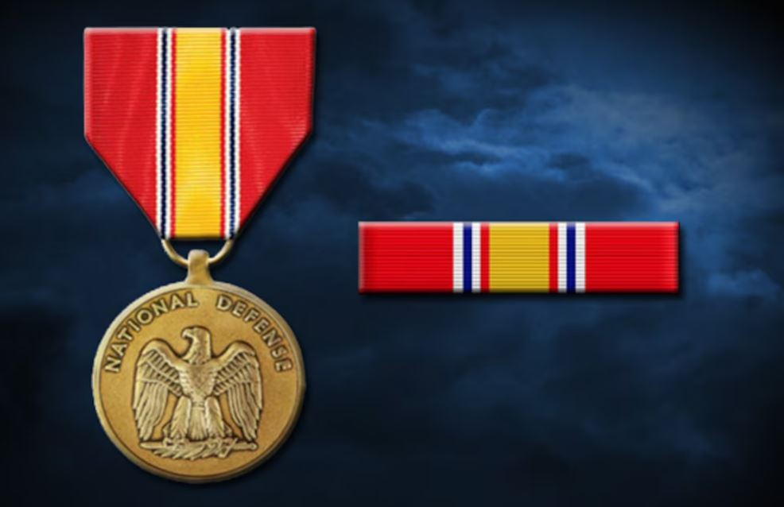
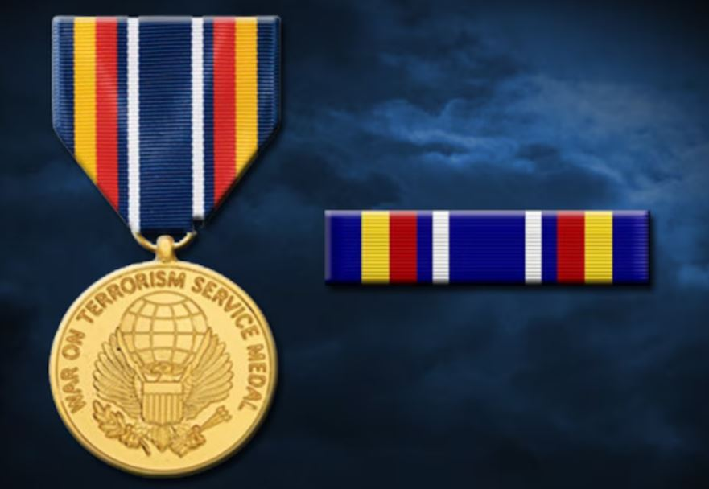

My Awards, Decorations, & Recognitions
Click on an award or recognition to learn more about its significance.
Disclaimer: Most of my military awards are participation trophies.
Recognized for maintaining a GPA of 3.5 or higher during the academic year.

Awarded to members of the United States Armed Forces who served during a time of declared national emergency.
Recognized for outstanding performance and academic achievement in the Non-Commissioned Officer leadership course.
This award, authorized by the Secretary of the Air Force on Aug. 28, 1962, is awarded to graduates of the following certified Non-Commissioned Officer Professional Military Education schools: NCO Preparatory Course, Airman Leadership School, NCO Leadership School, NCO Academy, and SNCO Academy.

Presented to members of the United States Air Force for four years of honorable active duty service.

This medal was authorized by the Secretary of the Air Force on March 28, 1958, for award to members of the armed forces of the United States who, while serving in any capacity with the Air Force after March 24, 1958, shall have distinguished themselves by meritorious achievement and service.

Granted to units that performed exceptionally well and contributed significantly to mission success.

Awarded for exemplary behavior, efficiency, and fidelity during three years of active service.

Completed intensive training in Levantine Arabic, achieving proficiency in speaking, reading, and writing.
The Chief of Staff of the Air Force authorizes the wearing of the GWOT-S for those individuals who either directly or indirectly supported the designated operations. Individuals must have participated in or served in support of the Global War on Terrorism-specified operations on or after Sept. 11, 2001.
Recognized for graduating in the top 10% of the Basic Military Training class.

It is awarded to U.S. Air Force service members on completion of initial accession training after Aug. 14, 1974. In December 1986, the criteria expanded and authorized the ribbon to anyone who was on active duty in December 1986, regardless of when they completed initial accession training.

Eagle Scout is the highest rank attainable in the Scouts BSA program by the Boy Scouts of America (BSA). Since its inception in 1911, only four percent of Scouts have earned this rank after a lengthy review process.
Graduated with a focus on academic excellence and community involvement.
Achieved black belt rank, demonstrating proficiency and dedication in Tae Kwon Do martial arts.